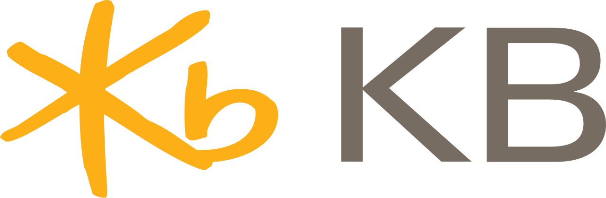
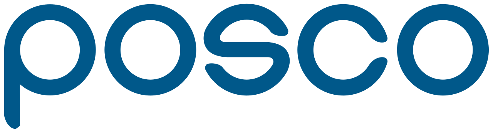

대표 로고대표 브랜드 마크
대표 로고대표 브랜드 마크홈 > 브랜드 매거진 > 우리은행
우리은행
우리은행(Woori Bank)은 우리금융지주 산하의 대한민국 시중은행이다.
산업 분야 브랜드·비즈니스 · 공개 등급 자료 기반 · 브랜드 평가 4.2 ★
한눈에 보는 브랜드
우리은행(Woori Bank)은 1999년 상업은행과 한일은행의 합병으로 출범한 한빛은행을 전신으로 하며 2002년 우리은행으로 사명을 변경했다. 한때 정부의 공적자금 회수를 위한 민영화를 거쳐 2019년 재출범한 우리금융지주의 완전자회사로 편입됐다.
브랜드 아이덴티티
상업·한일은행의 헤리티지를 계승한 대형 시중은행이다.
제품과 서비스
대표 제품과 서비스 정보는 편집 검수 후 공개됩니다.
타임라인
정리된 연도형 이벤트가 없습니다.
BI/CI 변천사
대표 로고대표 브랜드 마크함께 읽을 브랜드

브랜드·비즈니스 · 자료 기반KB국민은행KB국민은행(KB Kookmin Bank)은 자산 기준 한국 최대급 시중은행으로, KB금융지주 산하다.
HL
한화생명
브랜드·비즈니스 · 자료 기반한화생명한화생명(Hanwha Life)은 한화그룹 계열의 대한민국 생명보험회사다.
CK
한국씨티은행
브랜드·비즈니스 · 자료 기반한국씨티은행한국씨티은행(Citibank Korea)은 미국 씨티그룹이 지배하는 대한민국의 외국계 시중은행이다.
 브랜드·비즈니스 · 편집 검수Huntington Bank
브랜드·비즈니스 · 편집 검수Huntington BankHuntington Bank는 2025년에 기록된 Banking 계열의 브랜드 아이덴티티 사례입니다. Koto가 아이덴티티 작업의 디자이너로 기록되어 있습니다. 공개...

브랜드·비즈니스 · 자료 기반포스코포스코(POSCO)는 한국을 대표하는 철강 기업으로, 1968년 포항종합제철로 설립돼 2002년 사명을 POSCO로 바꿨다.
 브랜드·비즈니스 · 자료 기반우리금융그룹
브랜드·비즈니스 · 자료 기반우리금융그룹우리금융그룹(Woori Financial Group)은 우리은행을 중심으로 한 한국의 대형 금융지주회사다.
TB
토스뱅크
브랜드·비즈니스 · 자료 기반토스뱅크토스뱅크(Toss Bank)는 비바리퍼블리카(토스)가 모회사인 인터넷전문은행으로, 2021년 영업을 시작한 한국의 세 번째 인터넷은행이다.
 브랜드·비즈니스 · 자료 기반하나금융그룹
브랜드·비즈니스 · 자료 기반하나금융그룹하나금융그룹(Hana Financial Group)은 2005년 출범한 한국 3대 금융지주회사 중 하나다.